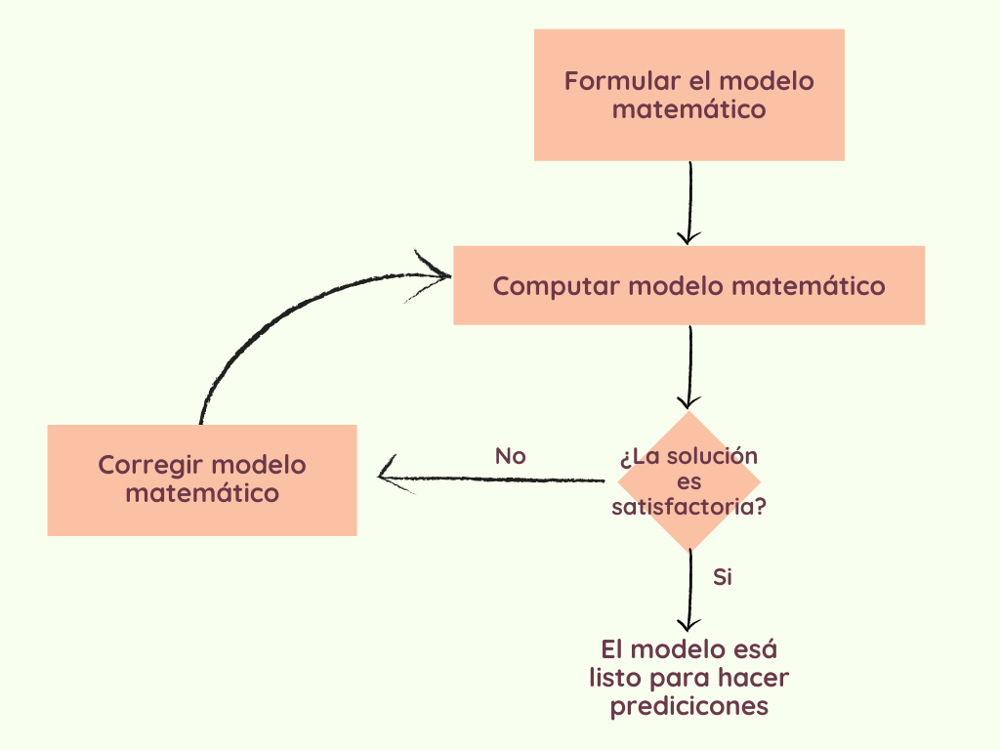

¿Qué es el cómputo científico?
Computación Científica es la ciencia aplicada que se encarga de desarrollar los MODELOS MATEMÁTICOS y computacionales de los procesos vinculados a los problemas científicos o tecnológicos de las ciencias naturales o de la ingeniería. Estos modelos sirven para manipular y controlar el problema real al que representan.
En la actualidad la mayoría (o quizá todas) de las áreas de la ingeniería utilizan computadoras para realizar modelos. Las trayectorias de los satélites y de las misiones espaciales est&án completamente computarizadas. Los ingenieros utilizan computadoras para simular el flujo de aire alrededor de un avión o de cualquier otro vehílo aeroespacial que atraviesa la atmósfera. Modelar nuevos diseños en una computadora puede ahorrar muchísimo dinero en comparación a construir múltiples prototipos. Lo mismo sucede al diseñar automóviles o muchos otros productos, incluso computadoras nuevas.

Modelos matemáticos
Ya que la computación científica se encarga de recrear modelos matemáticos en computadoras, es necesario saber cómo se crean los modelos matemáticos.
La formulación de un modelo matemático se comienza estableciendo los factores que se deben considerar. En muchos problemas de física, por ejemplo, los factores estan relacionados al balance de fuerzas y otras leyes de conservación de la física. Una vez considerados los factores involucrados, se plantea una solución al problema. Para muchos problemas, las soluciones exactas raramente se pueden encontrar, en esos casos la solucion se debe aproximar mediante algún método. Es importante que el modelo diseñado pueda ser computable, es decir, que lo pueda resolver una computadora.
Una vez que se encontró una solución computable, el siguiente paso es la validación del modelo. Esto significa que se debe verificar que la solución computada es lo suficientemente precisa para sevir a los fines para los que se construyó el modelo.
Aplicaciones de la computación científica
Simulaciones numéricas
La simulación numérica es una herramienta eficaz en las ciencias aplicadas, para la determinación de soluciones y la predicción del comportamiento de las mismas, sin recurrir a la experimentación. Permite la recreación matemática de procesos físicos que aparecen con frecuencia en el área de Ingeniería.
Algunos de sus objetivos son:
- Reconstruir y comprender los eventos conocitos (como terremotos, maremotos y otros desastres narutales).
- Predecir el futuro o situaciones no observadas (como el tiempo atmosférico, comportamiento de partículas subatómicas).
Modelos apropiados y análisis de datos
Algunos de sus objetivos son:
- Sintonizar apropiadamente los modelos o resolver ecuaciones para reflejar ciertas observaciones, sujetas a las restricciones del modelo (como la exploración geofísica del petróleo o la lingüistica computacional).
- Usar teoría de grafos para modelar redes, especialmente las conexiones individuales, organizaciones y sitios web.
Optimización
El cómputo científico se utiliza para optimizar escenarios desconocidos, como las técnicas y procesos de fabricación o las interfaces de ingeniería.
Lenguajes utilizados para el cómputo científico
Los lenguajes de programación comúnmente usados para los aspectos más matemáticos de las aplicaciones de la computación científica incluyen:
Fortran
Fortran (contracción del inglés Formula Translating System) es un lenguaje de programación de alto nivel de propósito general, procedimental e imperativo, que está especialmente adaptado al cálculo numérico y a la computación científica.
MATLAB
La plataforma de MATLAB está optimizada para resolver problemas científicos y de ingeniería. El lenguaje de MATLAB, basado en matrices, es la forma más natural del mundo para expresar las matemáticas computacionales. Las gráficas integradas facilitan la visualización de los datos y la obtención de información a partir de ellos. Una vasta biblioteca de herramientas (Toolboxes) integradas le permite empezar a trabajar inmediatamente con algoritmos esenciales para su dominio. El entorno de escritorio invita a experimentar, explorar y descubrir. Todas estas herramientas y funciones de MATLAB están probadas rigurosamente y diseñadas para trabajar juntas.
Scilab
Scilab es similar en su ámbito de aplicación GNU Octave, MATLAB o PsiLAB. Incluye cientos de funciones matemáticas y análisis de datos. Tiene un lenguaje de programación de alto nivel que permite el acceso a estructuras de datos avanzadas, 2-D y funciones gráficas 3-D. Permite resolver problemas de optimización continuos y discretos restringidos y no restringidos, así como algoritmos y herramientas estándar para modelado de sistemas mecánicos, circuitos hidráulicos, sistemas de control.
GNU Octave
Octave proporciona una interfaz de línea de comandos para resolver problemas lineales y no lineales de manera numérica, y desarrollar otros experimentos numéricos utilizando para ello un lenguaje que en sun mayoría es compatible con Matlab.
COMSOL Multiphysics
Entorno interactivo para el modelado y la simulación de fenómenos físicos y procesos. Puede modelar virtualmente cualquier fenómeno físico que se pueda describir con ecuaciones diferenciales parciales (PDEs), incluyendo transferencia de calor, movimiento de fluidos, acústica, electromagnetismo y mecánica estructural, soportando la integración de problemas de diferentes campos (Multifísica). Posee interfaces que permiten su integración con Matlab, así como la importación y exportación de la mayor parte de los formatos habituales de ficheros de CAD.